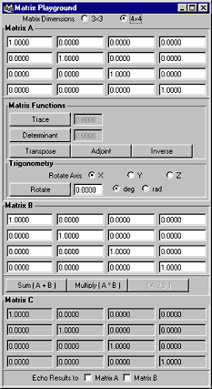
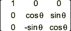
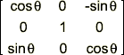
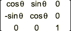
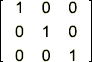

matrixPlayground
Everything you wanted to know and do with matrices. Handles 3×3 and 4×4 matrix calculations.
Matrix Dimensions
Choose whether to work with 3×3 matrices or 4×4 matrices. The UI will rebuild itself with matrices of the chosen size.
Note: Changing the Matrix Dimensions will clear all results and fill all matrices with an Identity Matrix.
Matrix A
Matrix Functions
Trace
Calculate the Trace of Matrix A. The result is displayed in the field to the right of this control. The Trace of a Matrix is the sum of the diagonal elements:
Determinant
Calculate the Determinant of Matrix A. The result is displayed in the field to the right of this control. The Determinant of a Matrix is defined as:
The Determinant of a 4×4 matrix is derived using Laplace Expansion.Transpose
Calculate the Transpose of Matrix A. The result is displayed as Matrix C. The Transpose of a Matrix is derived by swapping the rows and columns.
Adjoint
Calculate the Adjoint of Matrix A. The result is displayed as Matrix C. The Adjoint of a Matrix is derived as the Transpose of a matrix whereby each element is the cofactor of the element in the original matrix.
Inverse
Calculate the Inverse of Matrix A. The result is displayed as Matrix C. The Inverse of a Matrix is derived by taking the inverse of the matrix Determinant and multiplying it by the Adjoint matrix:
Trigonometry
The Trigonometry functions allow you to rotate Matrix A about one of the primary axes. Enter the amount of the rotation in the field provided and press Rotate to perform the calculation. The result is displayed as Matrix C.
Rotate Axis
Specify the axis upon which the rotation will be performed.
X Axis rotation:

Y Axis rotation:

Z Axis rotation:

Note: These rotation matrices may seem transposed to what is typically documented. They are correct, however, for their implementation within Maya, specifically for the Acquire Matrix and Apply Matrix functions described below.
deg | rad
Choose whether the rotation value is specified in degrees or radians.
Matrix B
Sum (A+B)
Calculate the Sum of Matrix A and Matrix B. The Sum is derived by adding the elements of A and B with the same indices:
Product (A*B)
Calculate the Product of Matrix A and Matrix B. The Product is derived by generating, for each element, the sum of the products for all elements of that element's row and column:
Matrix C
Echo Results
This allows you to automatically echo the results generated for Matrix C to one or both of the input matrices. This allows you to more quickly assess the results of multiple transformations.
Echo Results to Matrix A
When Matrix C is evaluated immediately copy the results for Matrix C into Matrix A.
Echo Results to Matrix B
When Matrix C is evaluated immediately copy the results for Matrix C into Matrix B.
Context Menu
Each Matrix grid offers a popup menu which may be accessed by holding the right mouse-button (RMB).
An example of this menu is depicted at left.
Make Identity
Fills the Matrix with the Identity Matrix; e.g.:

This menu item is not available for Matrix C.
Acquire from Selected
Fills the Matrix with the Transformation Matrix of the first object in Maya's selection list.
This menu item is not available for Matrix C.
Apply to Selected
Applies the Matrix as the Transformation Matrix to the first object in Maya's selection list.
Copy To Matrix
Copies the current Matrix to the specified Matrix. Matrix A can be copied to Matrix B; Matrix B can be copied to Matrix A; Matrix C can be copied to Matrix A and Matrix B.
Swap Matrix A & B
Swaps the elements for Matrix A and B. Since matrix multiplication is not commutative (generally, AB is not equal to BA), this allows you to multiply the matrices (i.e. apply a transformation) in the reverse order.
This menu item is not available for Matrix C.